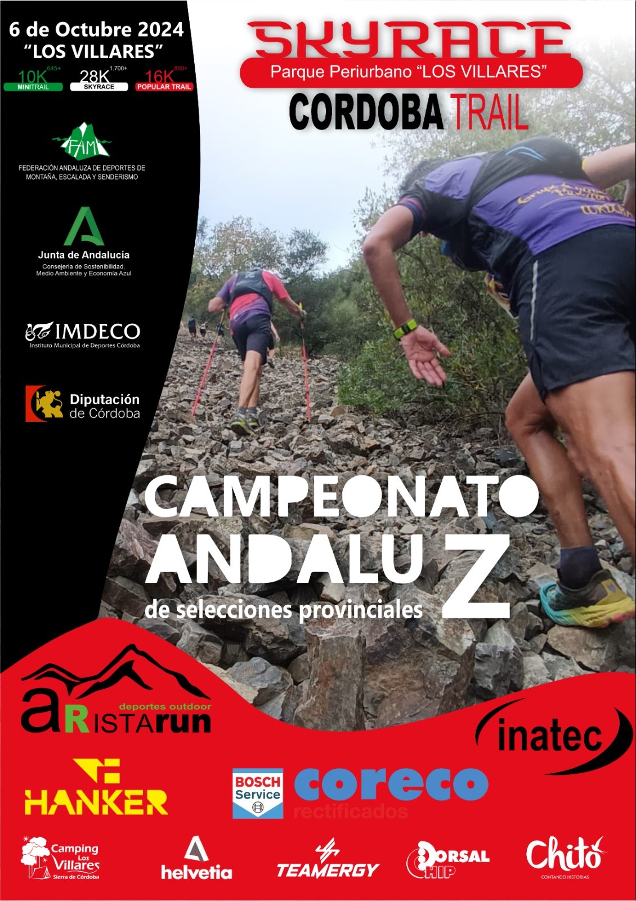

CxM24
Copa Córdoba
Reglamento
Clasificaciones
CxM Villafranca
CxM Cerros del Hoyo
CxM Villaharta
Castillo Carcabuey
CxM Castillo Anzur
CxM Rute
Epora Trail
CxM Turdulos
CxM Sierras Espiel
Cto Córdoba
Reglamento
Clasificaciones
CxM Sierras Baena
Cto Andalucía
Por Etapas
Selecciones Provinciales
naturCOR24
Info
Ochavillo del Río
Pedro Abad
Valsequillo
Cardeña
El Guijo
Montoro
Doña Mencía
Nueva Carteya
Santaella
Fuente Tójar
Vva del Rey
Vva de Córdoba
Alcocer (El Carpio)
Escalada24
Info
Rute
Espiel
CxM Otras Ediciones
2023
2022
2021
2020
2019
2018
2017
CxM Podium Histórico
Selección Córdoba CxM
2023
2022
2021
2019
Actividades FADMES Córdoba
Encuentro Veteranos
Noticias
Campeonato Andalucía CxM Selecciones Provinciales 2024 - Cordoba Trail Sky Race Los Villares

Cordoba Trail Sky Race Los Villares
Los Villares
6 OCT 2024
Inscripciones
Hasta miércoles 2 oct a las 15:00
Inscripciones
ORGANIZA Y PATROCINA